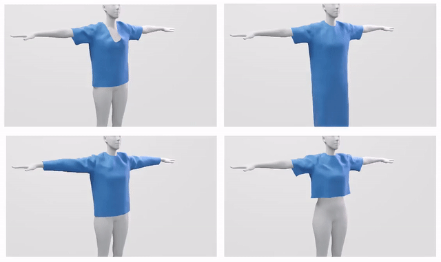
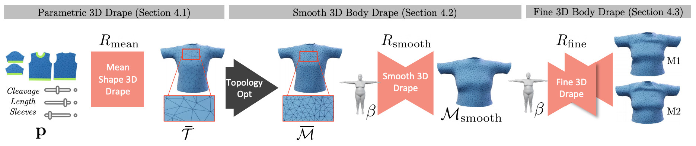

Description and Results
SoftSMPL is a learning-based method to model realistic soft-tissue dynamics as a function of body shape and motion.
Our method runs at real-time rates, and allows to interactively manipulate the shape of the character while visualizing the regressed dynamics. Notice how the soft tissue deformation changes when the shape parameter is modified.
{kind=link}
At the core of our method there is a neural network based soft-tissue regressor that outputs per-vertex 3D offsets encoded in a novel and highly efficient nonlinear subspace. Key to our method is the observation that traditional pose representations for human models are entangled with subject and shape specific features. We propose a novel pose descriptor to disentangle the pose space, producing a lower-dimensional representation that keeps the global pose of the actor while removing local features. Additionally, we mitigate dynamic pose features also entangled in the pose vector by a novel motion transfer technique.
Below we show the generalization capabilities of our method using MoCap sequences from the CMU dataset for a variety of body shapes. For additional results, check the supplementary video.